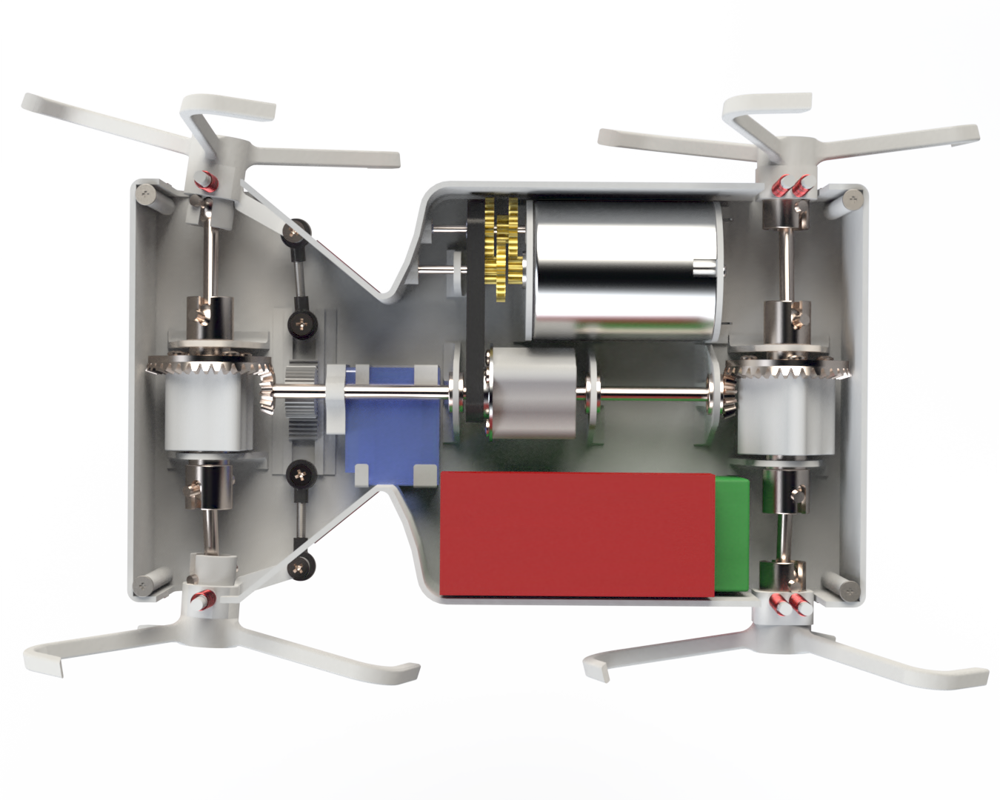
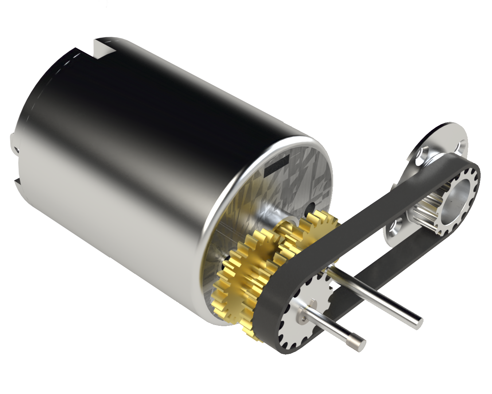
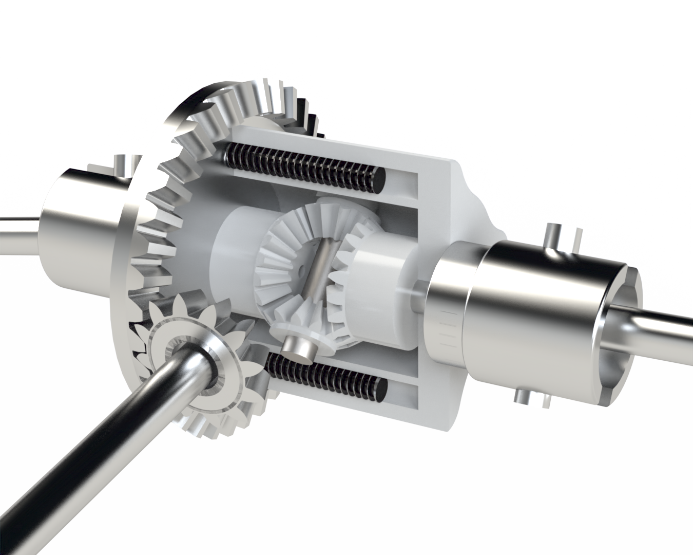
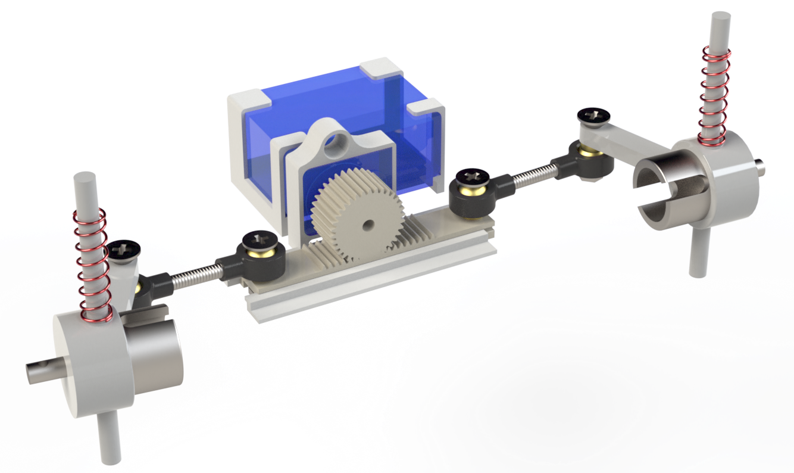

MINI-WHEG

OVERVIEW
March - April 2020
The task of this project was to design a fully functional model of a robotic device using Solidworks that would satisfy a range of requirements. It is inspired by the pre-existing MiniWhegs created by the team at Case Western Reserve University.
PRODUCT DETAIL
My MiniWheg is a four "wheel" drive mini vehicle, and has a total of 168 different components. The main elements of the MiniWheg are the gearbox, centre, front and rear differential, DC motor, micro-servo powered rack and pinion steering system, battery pack, electronic controller, and the four whegs. The robot's dimensions were restricted to 160x80x80mm, its weight limited to 200g, with a turning circle of less than 160mm, a speed of at least 0.5m/s, and could carry a payload of 200g. With all of these specifications in mind, I designed my MiniWheg with speed and efficiency in mind, to create a smooth driving contraption even on rough terrains.
To obtain the necessary torque to climb obstacles up to 55mm tall, a 54:1 gearbox is used was designed, with the goal of occupying as little space as possible. The gearbox relies on 3 sets of spur gears, increasing the torque with each subsequent gear reduction, and then transfers the rotation to a timing belt to the center differential. Through calculations it was determined that 0.104Nm of torque was required, ultimately allowing my MiniWheg to travel at a speed of 0.75m/s on rough terrain.
The MiniWheg was designed to be 4-Wheel drive, therefore needing the power from the motor to be transferred to all of the wheels. A differential system was created to allow for better steering and more efficient power delivery. The centre differential outputs the torque to both the front and rear drive shafts, adjusting the speed between the two axles and automatically outputting more speed to the slower side. The front and rear differentials enable the left and right sides to be at different speeds when turning as the internal wheel needs to spin less than the external one.
The steering mechanism relies on a servo powered rack and pinion system, chosen because of its relatively small size and simple mechanism. To minimise the turning radius of the MiniWheg, the Ackermann steering geometry was used, ensuring the external wheel would have a smaller turning angle. Through calculations, it was determined that allowing the wheels to have turning angle of αi=37.35° and αo=25.21° would be enough to ensure a turning circle smaller than 160mm.
DESIGN FOR MANUFACTURING
As feasible and efficient manufacturing was required for this project, most of the components were designed to be injection moulded for ease of large scale productions. To ensure this was feasible, multiple design iterations of the different components was required and Injection Moulding Simulations were done using Solidworks. This dictated some design elements, such as the integration of the different supports to the main chassis to reduce the number of individual components, as well as the addition of draft angles and fillets to the different bodies.